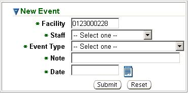

Previous Topic
Next Topic
| Event Log |
Previous Topic |
Next Topic |
The system’s third-level menu, New Event, of the second-level menu item, Event Log, of the Tools tab allows you to create a New Event associated with a facility. Events are stored, for each facility, in the third-level menu, Event Logs, of their Facility Detail, where you can also create a New Event. A New Event created by Ohio EPA staff is posted in both the internal system and the external IMPACT system of the facility. The facility will have access to view a New Event through an Event Log just like the one internal Ohio EPA staff view.
To create a New Event complete the fields as described below:

Click on  to enter
the note into the system. You will be routed to the Event Log
page
(second-level menu of Tools tab) where you will see the event in the
datagrid. You will also be able to see the event in the Event Logs
of
the third-level menu of the specific facility’s Facility Detail.
to enter
the note into the system. You will be routed to the Event Log
page
(second-level menu of Tools tab) where you will see the event in the
datagrid. You will also be able to see the event in the Event Logs
of
the third-level menu of the specific facility’s Facility Detail.
Copyright © 1996, 2004, Oracle. All rights reserved.